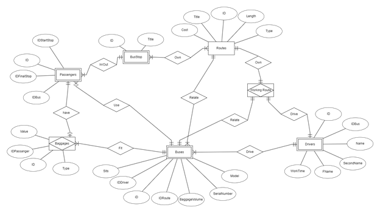

<h3>Варіант-8. Предметна область - "Розклад руху автобусів; "</h3><br>
<br>
Як можна побачити, усі сутності з опису ПО були перенесені до Інфологічної моделі та з'єднані відповідними типами з'єднань. 